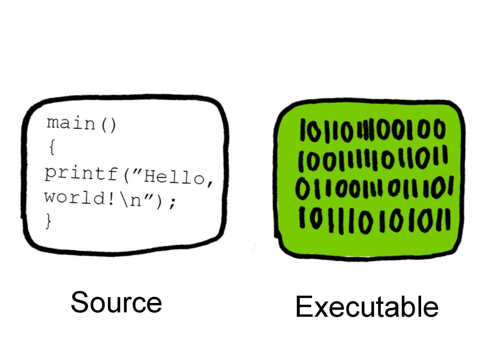

A Free Software
Why ?
Note: Presentation is created by open sourced reveal tool
Before I begin
Thank you & long live Fstival
Confession
I am not still 100% free s/w user :(
but !! on the way to achieve :)
I still use *the* real mobile phone
"Free" - A third eye perspective
Moral/Ethics/legal
- Should we eat/travel/purchase/demand/crime for free ?
- "Free" => Freedom without boundary, is it acceptable ?
- In "Free" world
- What will be the source of "Karma" as in efforts ?
- What will be the source of inspiration ?
- What will be the source of value - as in cost or ??
- Or ??
Practicality
- What if everything is free ?
- Is it possible by nature ?
- Free in what aspect ? - value or service or advise :)
- Or ??
What should be free ?
- Tangibles (perceptible by touch) ? - e.g. product, foods, goods etc..
- Non Tangibles - trademark, copyright, service, artwork, advise, music etc..
- Any other form ?
Two Sides
Free taking (consumer side)
Free offering (producer side)
Fragment Styles
There's different types of fragments, like:
grow
shrink
fade-out
fade-right, up, down, left
fade-in-then-out
fade-in-then-semi-out
Highlight red blue green
We are in Tech Era :)
User controls the Program or Program controls the User
Which one we want ?
Computer Anatomy
@reference from - FreeSoftware TEDx slides, 2014, CC-BY 3.0 licenseWho gives instruction to your computer
@reference from - FreeSoftware TEDx slides, 2014, CC-BY 3.0 licenseor is it like this ?
@reference from - FreeSoftware TEDx slides, 2014, CC-BY 3.0 licenseWe love mobile, life without mobile is like h_ll ?
@reference from - FreeSoftware TEDx slides, 2014, CC-BY 3.0 licensemy mobile listen to what I say, really ?
@reference from - FreeSoftware TEDx slides, 2014, CC-BY 3.0 licenseHow ?
 @reference from - FreeSoftware TEDx slides, 2014, CC-BY 3.0 licenseProprietary vs Malware
Proprietary - I am the owner of code and I need $$ for that
Malware - I will run without your permission and rob it whatever I can
Proprietary - Let's make more profit (I am greedy at that ) -> design the program to mistreat users
So, Malware = Software whose functioning mistreats the user and Proprietary dose not become less nasty than malware for $$
Power of Ownership
Proprietary : Developer or Owner in a position of power over its users - This its self is an injustice
- Back door: any feature of a program that enables someone who is not supposed to be in control of the computer where it is installed to send it commands
- Digital restrictions management, or “DRM”: functionalities designed to restrict what users can do with the data in their computers.
- Jail: system that imposes censorship on application programs.
- Tether: functionality that requires permanent (or very frequent) connection to a server.
- Tyrant: system that rejects any operating system not “authorized” by the manufacturer.
Yes, data & location continue gets tracked even thought data & wifi is off
? - - ?
Back Doors - GMS (Google Management Service), Vendor binaries, M-Updates etc...
Facebook, Google, Paytm other many apps - Why they need access to location, SMS, contacts all the time ?
When we switch of location in phone ? Does it really gets switched off ? How many of us do really believe this ?
My example of location tracking, without my knowledge
https://myactivity.google.com/myactivity
https://www.google.com/maps/timeline?hl=en&authuser=0&pb
How ?
How ?
@reference from - FreeSoftware TEDx slides, 2014, CC-BY 3.0 licenseAnd list continues...
- Swindle/(Kindle now) - Amazon : Page Tracking
- Deletion of book by Amazon - George Orwell 1984
- Facebook - everyone knows
- Google - We see everyday on our browsing pages and ads
- Apple - Hard to say, what big picture is being drawn at backside
And we got..
*Free Software Foundation*
Thanks to Mr. Richard Stallman
Four basic types of Freedom for s/w use
@reference from - FreeSoftware TEDx slides, 2014, CC-BY 3.0 licenseFreedom 0
@reference from - FreeSoftware TEDx slides, 2014, CC-BY 3.0 licenseFreedom 1
@reference from - FreeSoftware TEDx slides, 2014, CC-BY 3.0 licenseFreedom 2
@reference from - FreeSoftware TEDx slides, 2014, CC-BY 3.0 licenseFreedom 3
@reference from - FreeSoftware TEDx slides, 2014, CC-BY 3.0 licenseFree software vs open source
Are they same ?
Yes - Visibly
No - in Principle
Free software vs open source
By Richard Stallman:Why Open Source misses the point of Free Software:
“The terms “free software” and “open source” stand for almost the same range of programs. However, they say deeply different things about those programs, based on different values. The free software movement campaigns for freedom for the users of computing; it is a movement for freedom and justice. By contrast, the open source idea values mainly practical advantage and does not campaign for principles. This is why we do not agree with open source, and do not use that term.”
Open Source Vs Free Software
| Open Source | Free Software |
|---|---|
| Development methodology | Social movement |
| economic/business argument for Free Software | moral/ethical argument for Free Software |
| using/providing open source s/w is a good for you & your business | using/providing free software s/w is a morally right thing to do |
My Journey : Android OS => Free Mobile OS
Android '--' 'Proprietary' = FMO
Demo
Few open challenges still..
- Hardware - not open
- Vendor blobs (by SoC vendors - not open
- Graphics binaries - reverse engineering efforts to be validated, but not full proof
- Alternative open & free cloud server for data sync
Certainly, we have doubts
- Thank You !!